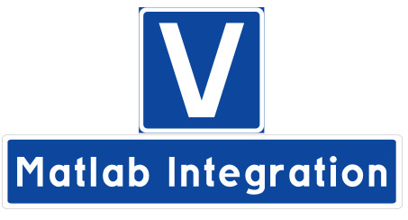

Posts tagged VUnit
Sigasi Adds Full VUnit Support
- 12 September 2018
This article was originally posted on LinkedIn where you may find some comments on its contents.
Sigasi Deepens Its Commitment to the VUnit Testing Framework
- 22 July 2018
This article was originally posted on LinkedIn where you may find some comments on its contents.

VUnit Community Developed BFMs
- 22 March 2018
This article was originally posted on LinkedIn where you may find some comments on its contents.
VUnit 3.0
- 12 February 2018
A new year has come and it is time for a third major update of VUnit. The update contains a number of major enhancement briefly presented in this post.

VUnit BFMs - as Simple as Emailing
- 14 December 2017
This article was originally posted on LinkedIn where you may find some comments on its contents.

VUnit Matlab Integration
- 23 November 2017
This article was originally posted on LinkedIn where you may find some comments on its contents.
VUnit 3.0 - While Waiting for VHDL-2017
- 07 November 2017
This article was originally posted on LinkedIn where you may find some comments on its contents.

VUnit 3.0 Color Logging
- 31 October 2017
This article was originally posted on LinkedIn where you may find some comments on its contents.

Sigasi Adds Support for VUnit Testing Framework
- 22 September 2017
This article was originally posted on LinkedIn where you may find some comments on its contents.
Enable Your Simulator to Handle Complex Top-Level Generics
- 03 June 2017
A powerful feature in VUnit is the ability to run testbenches and test cases with different configurations (not to be confused with VHDL configurations). The typical use case is to run tests with different generics but you can also run with different simulator settings and register Python functions to be run before and after the test. The latter can be used to create stimuli and verify test outputs using the power of Python or some other external program like Matlab.
Over time VUnit users tend to get more advanced in the use of generics which inevitably leads to more complex data
types. Rather than passing many generics of scalar types they want to create composite types like records and
arrays. Unfortunately, many simulators have restrictions on what type of generics you can pass to the top-level
testbench entity. Typically you’re limited to a small subset of the standard composite types like string and
std_logic_vector and can’t use custom composite types. This is a limitation when trying to write clean and
efficient code but something that can be worked around using VUnit. The trick is to encode your composite data
type into something that the simulator _can_ handle and then decode back to the original type within the VHDL
testbench. string is something most (all?) simulators can handle and what I will use in these examples.
VUnit - Getting Started 1-2-3
- 12 January 2017
I recently a started a LinkedIn blog series about getting started with VUnit. The first three parts are:
VUnit - The Best Value for Initial Effort - Part 3
- 22 November 2016
This article was originally posted on LinkedIn where you may find some comments on its contents.

VUnit - The Best Value for Initial Effort - Part 2
- 16 November 2016
This article was originally posted on LinkedIn where you may find some comments on its contents.

VUnit - The Best Value for Initial Effort - Part 1
- 15 November 2016
This article was originally posted on LinkedIn where you may find some comments on its contents.

Making OSVVM a Git Submodule
- 08 August 2016
Prior to the 0.67.0 release the OSVVM library included with VUnit was a modified copy of the original project to support GHDL. Nowadays the OSVVM project supports GHDL natively and it is also available from GitHub so we made it a submodule instead. The submodule is a way to keep another Git repository (OSVVM) in a subdirectory of the VUnit repository while keeping their histories separate. Updates to OSVVM doesn’t affect the VUnit history and vice versa. This makes no difference if you’re downloading VUnit from PyPi but if you’re cloning VUnit from GitHub there are some things to consider. If you’re pulling version 0.67.0 to update your local Git clone the OSVVM subdirectory of VUnit will become empty. To populate the directory you have to do
Improving VHDL Testbench Design with Message Passing
- 21 February 2016
Some time ago me and my colleagues at Synective Labs did a teamwork exercise called the Marshmallow Challenge. The challenge is to build the tallest structure that can hold a marshmallow from twenty sticks of spaghetti, one yard of tape and one yard of string. The structure must be completed within 18 minutes. Many teams with various backgrounds have taken this challenge and a number of observations have been made:
Website Updates
- 01 February 2016
Our website has been updated with a Gitter-based chat and an improved documentation platform based on Sphinx. When changing to Sphinx it came natural to also switch the blogging platform to ABlog which is based on Sphinx.
The chat has just been active for a few days but it’s already very active. Currently it’s used to port VUnit to Cadence Incisive. We don’t have such licenses but the chat has been used to support the porting work done by people that do. FOSS collaboration at its best!
Chat with VUnit Users and Developers
- 29 January 2016
Today I created a VUnit chat room using Gitter. Click the chat icon on the left of the page to join the discussion.
Welcome to Our New Website
- 26 January 2016
Today I moved VUnit from my personal GitHub account to a dedicated VUnit account. Links to the previous account are redirected to the new so your clones of VUnit should not be affected. However, I suggest you update your remote location to avoid any confusion.
Free and Open Source Verification with VUnit and GHDL
- 15 December 2015
Originally posted and commented on LinkedIn.
VUnit is a free and open source (FOSS) unit testing framework for VHDL that supports ModelSim, Rivera-PRO, GHDL, and Active-HDL. GHDL is a FOSS simulator which VUnit started to support 6 months ago but until recently you had to build GHDL yourself from source code to get a version working with VUnit. This was inconvenient and made it harder to get started but with the official release of GHDL 0.33 this is no longer an issue and you can download binary builds directly.
Who’s Using UVM (or Not) for FPGA Development, and Why?
- 10 October 2015
Originally posted and commented on LinkedIn.
Over the last few years a number of open source test solutions have emerged. I’m talking about tools like our VUnit but also others like OSVVM, Cocotb, BVUL, and SVUnit. The people developing these tools all had the question:
Short Introduction to VUnit
- 24 September 2015
Originally posted and commented on LinkedIn.
VUnit is a free and open source unit testing framework for VHDL that was released in November last year. Initially it supported ModelSim, then GHDL support was added in June, and a few days ago we added support for Active-HDL and Riviera-PRO. The latest addition makes the tool available for a new group of users and this is a short introduction for you.